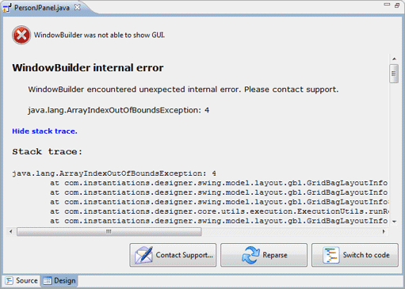
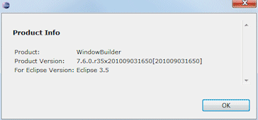
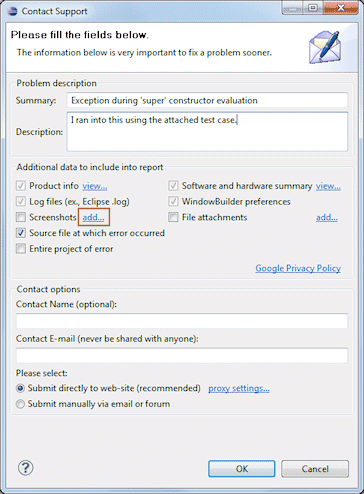
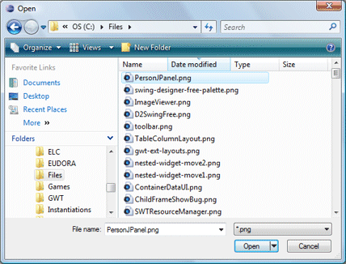
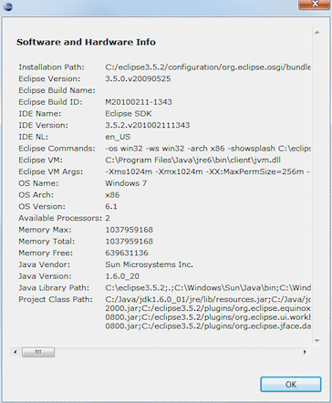
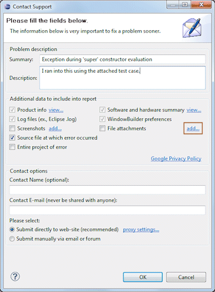
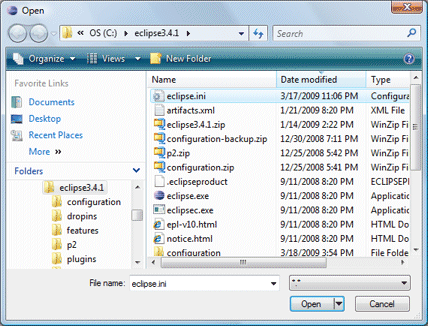

| When something unexpected happens (such as an exception being thrown) while trying to parse a user interface class or perform a design view operation, the editor will display the following error page: | |||
|
|||
|
Clicking the Show stack trace link will reveal the captured stack trace. Clicking the link a second time will hide the stack trace.  Contact Support DialogClicking the Contact Support button with open the Contact Support Dialog: |
|||
Product infoClick on the Product info view.. link to see the product info that will be sent along with the case.  ScreenshotsClick on the Screenshots add.. link to attach additional screenshots to the case.   Software and hardware summaryClick on the Software and hardware summary view.. link to see the software and hardware info that will be sent along with the case.  File attachmentsClick on the File attachments add.. link to attach additional files to the case (such as your eclipse.ini file).   Contact OptionsThe Contact Support Dialog provides two options for sending the case information to support: direct submission to the support web-site via a direct web transaction (requires an Internet connection), or manual (via email or posted to the user forum). Optional fields for Contact Name and Contact E-mail are also provided. Enter valid values in these fields, if you would like support to follow up with you concerning this case. The supplied e-mail address will only be used in the context of this specific case. Submit directly to web siteThis initiates a direct HTTP web transaction with the bug
tracking system and takes only a matter of seconds. An Internet connect is
required for this option. This is the recommended option for submitting the case
to support. |
|||
|
|||
|